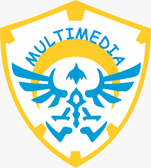

Jurusan Multimedia
Kompetensi Keahlian Multimedia adalah salah satu kompetensi keahlian di sekolah menengah kejuruan (SMK) yang mendidik para siswanya untuk menjadi tenaga muda ahli di bidang multimedia. Multimedia merupakan kombinasi teks, seni,animasi, gambar dengan dilengkapi audio video yang di komunikasikan /disampaikan baik melalui computer atau peralatan manipulasi elektronik dan digital lainTujuan
Tujuan kompetensi keahlian multimedia adalah membekali para siswanya dengan keterampilan, pengetahuan dan sikap agar kompeten dalam:- mengoperasikan perangkat lunak dan peralatan digital illustration, digital imaging, dan web design
- mengoperasikan perangkat lunak dan peralatan multimedia, presentation, 2D animation, dan 3D animation
- mengoperasikan perangkat lunak dan peralatan digital audio, digital video, dan visual effects
Ruang Lingkup Pekerjaaan
- Pengembang Web(Web Development)
- Pengembang Multimedia(Multimedia Development)
- Rumah Produksi Sinema/Film(Production House)
- Industri Media dan Periklanan(Media and Advertisement)
- Teknisi Komputer(Computer Maintenance)